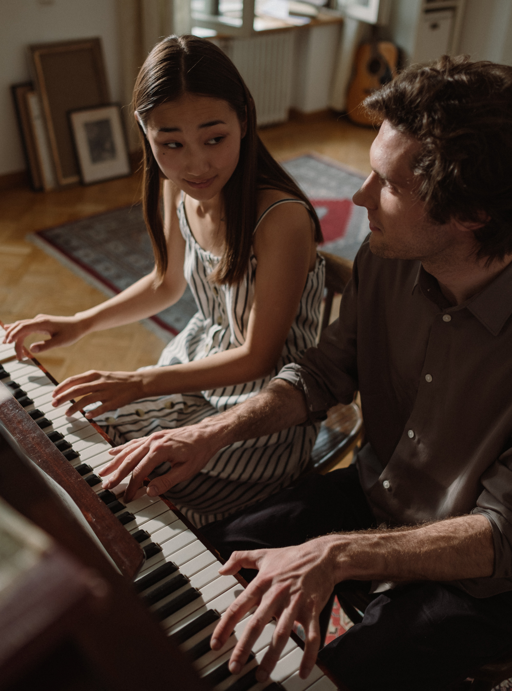

Lisa & Alex are an alternative rock, indie, folk-pop duo. They have been recording their music and showing it on the Internet for years and won hearts of their fans not only with their music, but with their story as well. They met in 2013 when Lisa moved to the New York to study music and Alex was one of her classmates. After some time they started dating and created this duo because of their passion for music.
After their song Red Roses became popular on the Internet in 2019, they got a record deal for a Records label. Their debut album Living through emotions was released on July 7th, 2020. It was success and it was featured in magazines and all over the Internet. Now they are excited about their second release: Singularity.
